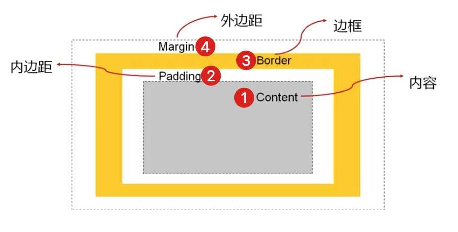

块级元素默认情况下，宽度撑满一行、高度包裹内容
块级元素可以设置宽高，也就是说对于块级元素来说设置width和height属性是生效的；不过就算我们给它们设置了宽高，它们还是会独占一行——因为并没有改变它们是块级元素的本质，也就是说虽然它的宽度变小了，但是它的margin会变大，因为它们的margin-right=auto
行内级元素默认情况下，宽度包裹内容、高度包裹内容
行内级非替换元素不可以设置宽高，也就是说对于行内级非替换元素来说设置width和height属性是不生效的，它们的宽高只能由内容决定——即包裹内容

“行内级”在前面，就意味着这种元素首先是个行内级元素，因此行内块级元素默认情况下，宽度包裹内容、高度包裹内容
但是后面又有一个“块级”，就意味着这种元素可以设置宽高，也就是说对于行内块级元素来说设置width和height属性是生效的；并且因为它已经变成了一个行内级元素，所以它不会再独占一行了